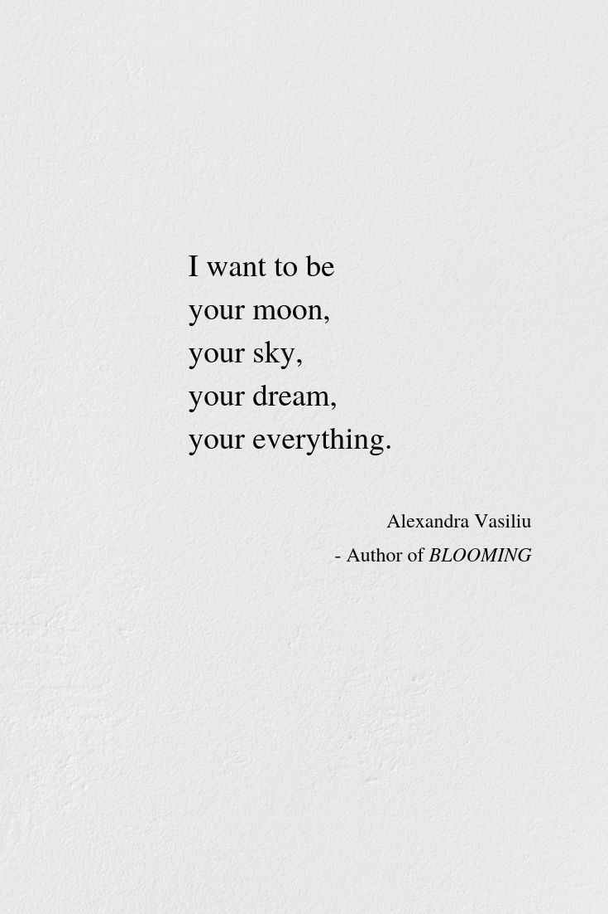

Epigram- a short poem or sentence that expresses something such as a feeling or idea in a short and clever or funny way.
Hold fast to dreams
For if dreams die
Life is a broken-winged bird
That cannot fly.
Hold fast to dreams
For when dreams go
Life is a barren field
Frozen with snow.

Some say the world will end in fire,
Some say in ice.
From what I’ve tasted of desire
I hold with those who favor fire.
But if it had to perish twice,
I think I know enough of hate
To say that for destruction ice
Is also great
And would suffice.
Shall I compare thee to a summer’s day?
Thou art more lovely and more temperate.
Rough winds do shake the darling buds of May,
And summer’s lease hath all too short a date.
Sometime too hot the eye of heaven shines,
And often is his gold complexion dimmed;
And every fair from fair sometime declines,
By chance, or nature’s changing course, untrimmed;
But thy eternal summer shall not fade,
Nor lose possession of that fair thou ow’st,
Nor shall death brag thou wand’rest in his shade,
When in eternal lines to Time thou grow’st.
So long as men can breathe, or eyes can see,
So long lives this, and this gives life to thee.
Do not stand at my grave and weep
I am not there. I do not sleep.
I am a thousand winds that blow.
I am the diamond glints on snow.
I am the sunlight on ripened grain.
I am the gentle autumn rain.
When you awaken in the morning’s hush
I am the swift uplifting rush
Of quiet birds in circled flight.
I am the soft stars that shine at night.
Do not stand at my grave and cry;
I am not there. I did not die.
With the sun in my hand
Gonna throw the sun
Way across the land-
Cause I’m tired,
Tired as I can be